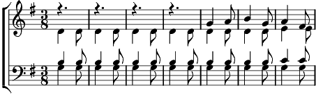

1. La, la, la...
C'était la berceuse des anges
Qui chantaient tant belles louanges
A la Vierge Marie.
Refrain:
Berce, berce doucement,
Berce, berce, tendrement,
Berce, berce ton enfant.
2. La, la, la...
Au milieu de l'herbe sèche
Il dormait dans une crèche
Sous les yeux de Marie.
Refrain
3. La, la, la...
Mais là-haut la voix des anges
Consolait par tendres louanges
La Vierge Marie.
Refrain
Coda:
Dans le calme de la nuit